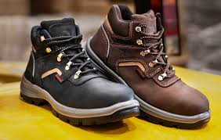

¡Bienvenido a Paso Firme!
¡Tu sitio favorito de calzado!

Botas de Trabajo Paso Firme
Durabilidad y Seguridad para Cada Paso
Las botas de trabajo Paso Firme están diseñadas para ofrecerte la máxima protección y comodidad en tus jornadas laborales. Fabricadas con materiales de alta calidad, estas botas están pensadas para resistir las condiciones más exigentes, manteniendo tus pies seguros y cómodos todo el día.
Características:
Construcción Resistente: Hechas con cuero de alta durabilidad y materiales de última tecnología que protegen contra golpes, cortes y abrasiones.
Suela Antideslizante: La suela de goma antideslizante garantiza estabilidad y agarre en superficies resbaladizas, asegurando tu seguridad en cualquier entorno de trabajo.
Protección Completa: Con puntera de acero y plantillas reforzadas, nuestras botas protegen tus pies contra impactos y objetos punzantes, ofreciendo una cobertura total en ambientes de trabajo difíciles.
Comodidad Todo el Día: Gracias a su plantilla ergonómica y a la amortiguación en el talón, nuestras botas proporcionan un confort superior, incluso en largas jornadas laborales.
Diseño Transpirable: A pesar de su robustez, las botas cuentan con materiales transpirables que mantienen tus pies frescos y secos durante todo el día.
Ideal para:
Trabajos en construcción, minería, almacenes y fábricas.
Profesionales que buscan resistencia, confort y seguridad en cada paso.
Con las botas de trabajo Paso Firme, no solo aseguras tu protección, sino que también experimentas la comodidad que necesitas para concentrarte en tu trabajo sin preocupaciones. ¡Haz que cada paso cuente!